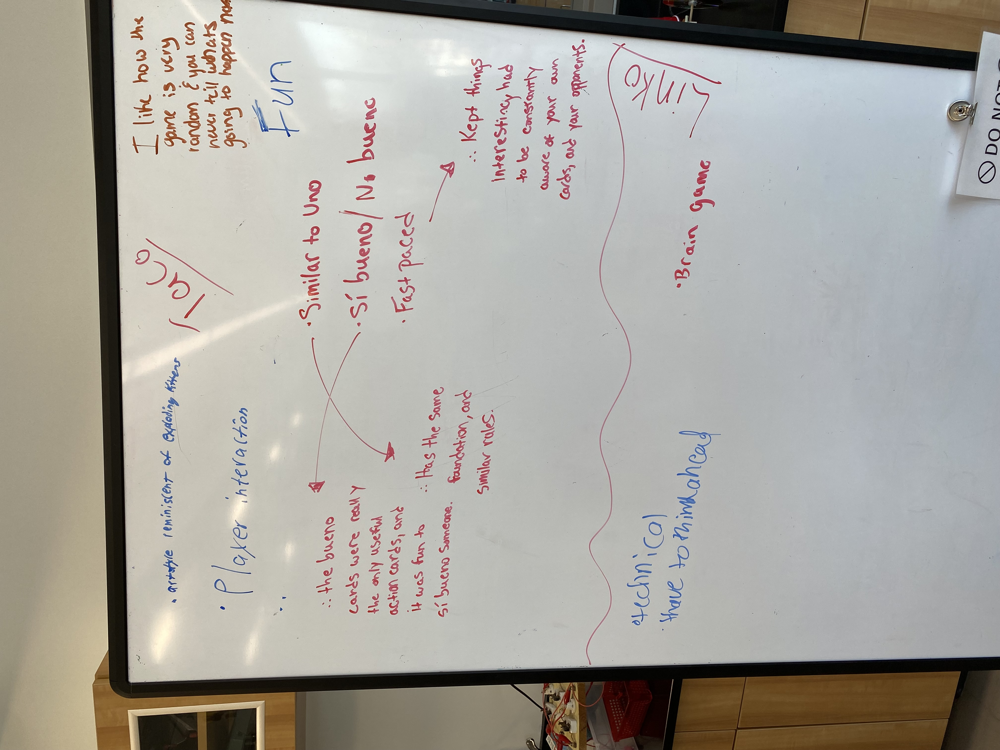
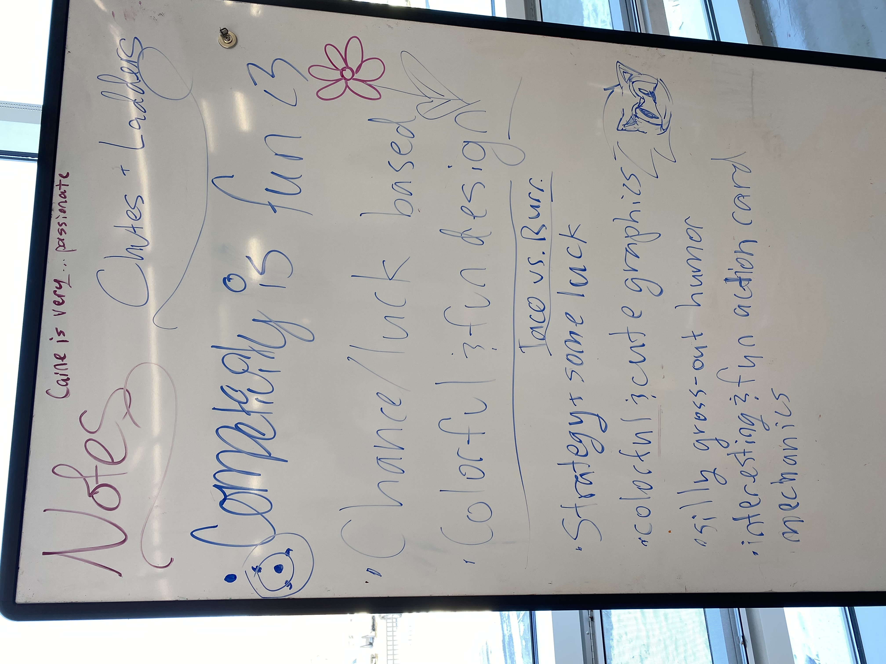
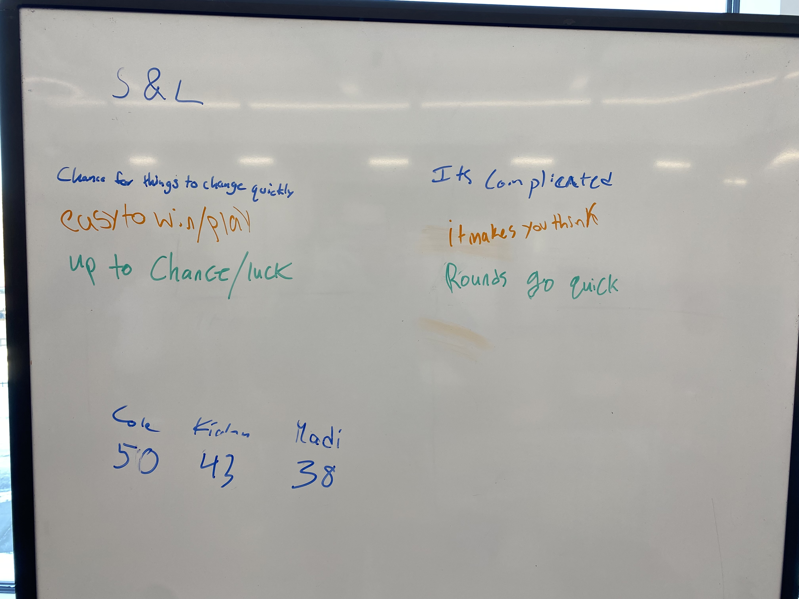

layout: true <div class="my-header"><img src="images/scsdLogo.png" style="height: 70px;"/></div> --- ##.gray[2022.02.11] .purp[Video Game Design] .green[Agenda] .qotd[❓of the 📅: What roles do games play in society? Why do we have and play games?] 1. Checkers Playtest Reflection: - Read through your groups' feedback and reflect - Share out what we learned 2. [Creating your own board game](https://docs.google.com/presentation/d/1BmCMy81k8nmq0T4Kk4xJwtoLNkHMuguTdY5iHfuPgBA/edit#slide=id.g1121c288a9c_0_94) - Intro to task - Research Genre & Rating system - Game Ideation --- ##.gray[2022.02.09] .purp[Video Game Design] .green[Agenda] .qotd[❓of the 📅: Who would win in a fight between a bear 🐻 and a gorilla 🦍?] 1. Reflect & Review MDA 2. Checkers Modification Documentation 3. Playtesting - How to give effective feedback 4. Playtest Checkers modifications and provide feedback --- ##.gray[2022.02.07] .purp[Video Game Design] .green[Agenda] .qotd[❓of the 📅: How did you spend your snow day?] 1. Documenting UTR Modifications 1. [Mechanics, Dynamics, Aestethics](https://docs.google.com/presentation/d/1OZlifTA2_tUzgG6S1IMfWWvJqQwbLA94/edit?usp=sharing&ouid=103298194982927521403&rtpof=true&sd=true) 1. Checkers and Modifying the *Mechanics* --- ##.gray[2022.02.03] .purp[Video Game Design] .green[Agenda] .qotd[❓of the 📅: What is your favorite board game and why?] 1. Discussing Board Games and "Fun" 2. Up the River - Play 3. Up the River - Modify and Observe 4. Up the River Share out --- ##Whiteboards .center[] --- ##Whiteboards .center[] --- ##Whiteboards .center[] --- class:center, middle #What does it mean for a game to be *fun*? --- #.green[Up the River] Essential Question: **What does it mean for a game to be *fun***? -- ##⏰ 15 Minutes: - Read UTR Rules - Play Multiple Times to learn how the games works - Think about what makes the game fun, or what could be improved -- ##Make a *single* change - Play with your change and decide if it improved the game --- #Up the River 🌊 Share Out - What change did you make? - Did it improve UTR? Why or why not? -- Compare: - How was your change similar & different from the other two groups? --- ##.gray[2022.02.01] .purp[Video Game Design] .green[Agenda] .qotd[❓of the 📅: What is your all time favorite video game?] 1. Question of the Day share out 2. Play Board Games! - Play game once to be fimilar with rules and play style - Play again and note what you and your group find fun about the game ✍🏻 Record on Whiteboard (a few bullet points) - Rotate Games - Decide on your favorite game & be ready to explain why that game was your group's favorite (what made it the **best** and **why**?) 3. Discuss Favorite Board Games & and elements of "Fun" ---